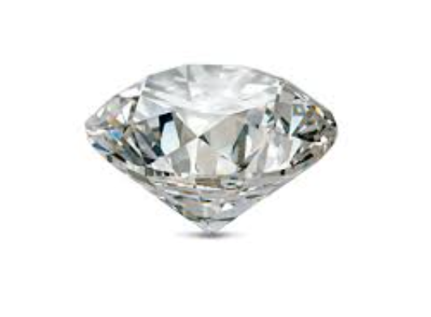
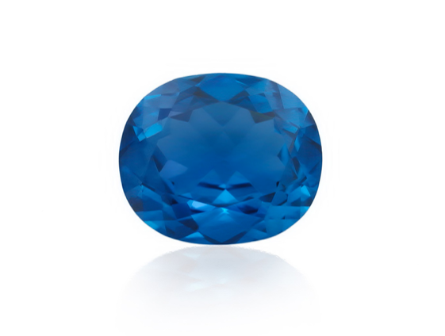
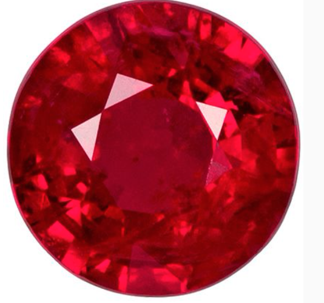
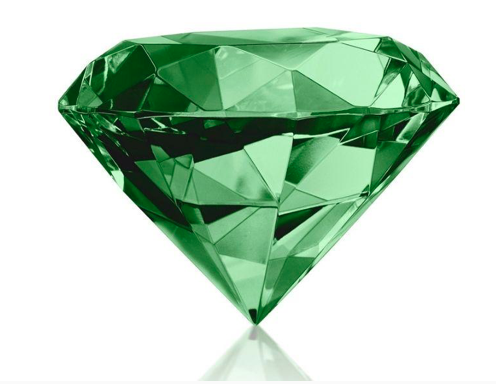

Jewelry Stones
The Greeks started using gemstones in jewelry around 1600 BC. Precious stones like emeralds, rubies and sapphires were imported via the Silk Road from India, Sri Lanka and the Far East.
By 300 BC, the Greeks were making jewelry with semi-precious gemstones like amethysts and pearls. Greek lapidaries invented new stone carving techniques which enabled them to engrave gems like agate with intricate patterns and pictures.
“Greek lapidaries invented new stone carving techniques”
Due to Alexander the Great’s influence and power, the Greek jewelry designs were influenced by many other cultures, like Asia. This led to the use of beautiful and lavish jewelry pieces inlaid with a multitude of colored stones like pearls, emeralds, garnet, carnelian, agate and peridot, as well as rock crystals.
The ancient Greeks believed that amethyst could keep them sober while drinking wine – View this Greek vintage-style amethyst ring here
The ancient Greeks believed that gemstones held many powers. For example, they believed that wearing amethyst while drinking wine would protect them from drunkenness. In fact, the word “amethyst” comes from the Greek amethystos meaning sober. Sapphires, on the other hand, are named after the Greek word sapphirus which means blue. The Greek considered sapphires symbolic of wisdom and purity.
Diamond
Diamonds, reputedly a “girl’s best friend”, are the hardest naturally occurring material known to man. They are one of the most treasured stones in the world and feature strongly in Sheila's Engagement Rings, Ring Sets and Eternity Rings as well as many of her jewelry collections. Our Guide to Diamonds has more information about the Cut, Clarity, Color and Carat of the diamonds we use.
Blue Sapphire
After diamonds, sapphires are the next hardest gemstone and one of the most valuable. Sapphires belong to the corundum family of rock minerals, which occur in many colors. All colors, other than red corundum, are known as sapphires, with a blue sapphire being the most coveted even though other colors may be rarer. Sapphires are stunning set in white gold, such as Sheila's Celtic Trilogy Ring.
Red Ruby
Ruby, known for its bright red color, is a variety of the corundum mineral. All other varieties of the mineral are sapphires. Like sapphires, rubies are second only to diamonds in their hardness and brilliance, but they are rarer than both diamonds and blue sapphires. Sheila's Celtic Knot work Ring in 18ct yellow gold is hand-set with a ruby in our Orkney workshop.
Green Emerald
These richly colored stones belong to the beryl group, which also includes aquamarine. Emerald's captivating green color is unique and unparalleled in all other gemstones due to inclusions that make each stone unique. Along with high quality diamonds, blue sapphires and red rubies, the green emerald is one of the “big four”. Unlike the other three, however, emeralds are more fragile and exposure to excessive moisture should be avoided.